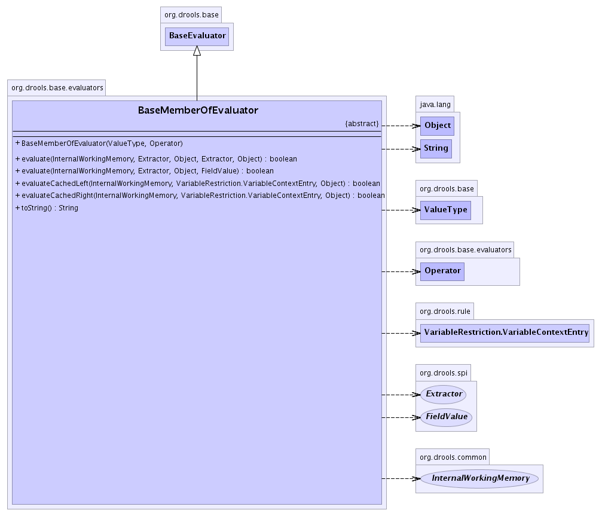

org.drools.base.evaluators
Class BaseMemberOfEvaluator
java.lang.Object
 org.drools.base.BaseEvaluator
org.drools.base.evaluators.BaseMemberOfEvaluator
org.drools.base.BaseEvaluator
org.drools.base.evaluators.BaseMemberOfEvaluator
- All Implemented Interfaces:
- java.io.Serializable, Evaluator
public abstract class BaseMemberOfEvaluator
- extends BaseEvaluator
This is a base class for MemberOf Evaluators
- See Also:
- Serialized Form
-
- 
|
Method Summary |
boolean |
evaluate(InternalWorkingMemory workingMemory,
Extractor extractor1,
java.lang.Object object1,
Extractor extractor2,
java.lang.Object object2)
|
boolean |
evaluate(InternalWorkingMemory workingMemory,
Extractor extractor,
java.lang.Object object1,
FieldValue object2)
This method will extract the value from the object1 using the
extractor and compare it with the object2. |
boolean |
evaluateCachedLeft(InternalWorkingMemory workingMemory,
VariableRestriction.VariableContextEntry context,
java.lang.Object right)
|
boolean |
evaluateCachedRight(InternalWorkingMemory workingMemory,
VariableRestriction.VariableContextEntry context,
java.lang.Object left)
|
abstract java.lang.String |
toString()
|
| Methods inherited from class java.lang.Object |
clone, finalize, getClass, notify, notifyAll, wait, wait, wait |
BaseMemberOfEvaluator
public BaseMemberOfEvaluator(ValueType type,
Operator operator)
evaluate
public boolean evaluate(InternalWorkingMemory workingMemory,
Extractor extractor,
java.lang.Object object1,
FieldValue object2)
- Description copied from interface:
Evaluator
- This method will extract the value from the object1 using the
extractor and compare it with the object2.
- Parameters:
workingMemory - TODOextractor - The extractor used to get the source value from the objectobject1 - The source object to evaluate
- Returns:
- Returns true if evaluation is successfull. false otherwise.
evaluateCachedRight
public boolean evaluateCachedRight(InternalWorkingMemory workingMemory,
VariableRestriction.VariableContextEntry context,
java.lang.Object left)
evaluateCachedLeft
public boolean evaluateCachedLeft(InternalWorkingMemory workingMemory,
VariableRestriction.VariableContextEntry context,
java.lang.Object right)
evaluate
public boolean evaluate(InternalWorkingMemory workingMemory,
Extractor extractor1,
java.lang.Object object1,
Extractor extractor2,
java.lang.Object object2)
toString
public abstract java.lang.String toString()
- Overrides:
toString in class java.lang.Object